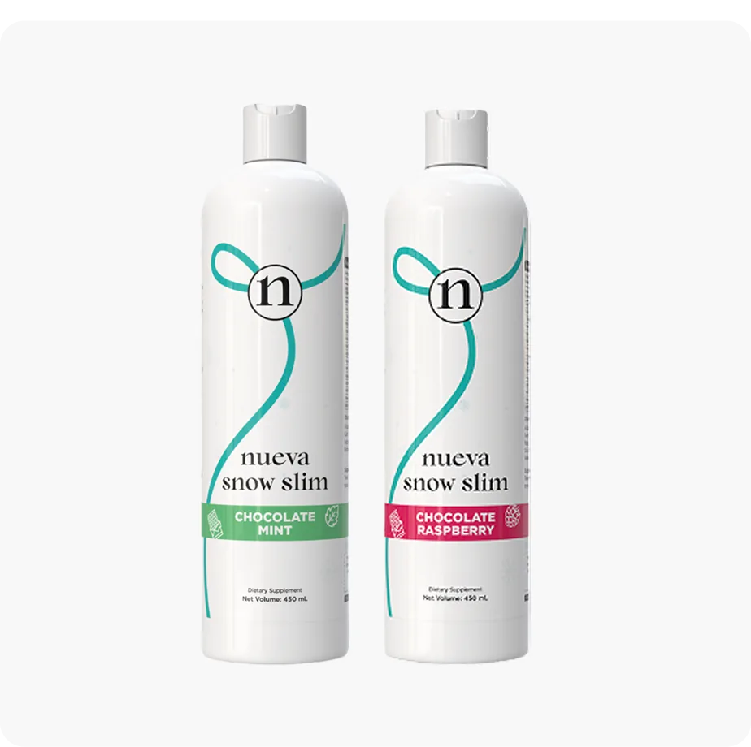
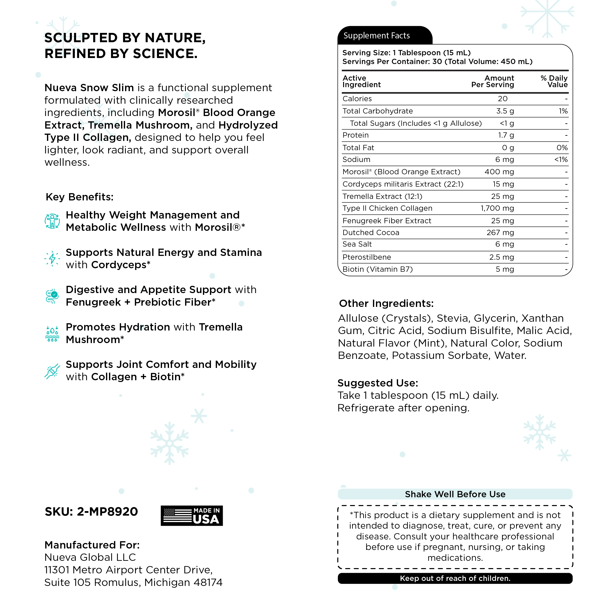

Control de peso y bienestar metabólico
Con extracto de naranja sanguina Morosil®.
El producto que acompaña tu plan
Un líquido diario hecho alrededor del extracto de naranja sanguina Morosil®, que Nueva describe como clínicamente estudiado para apoyar una composición corporal saludable y el equilibrio metabólico. Una cucharada, sabor chocolate menta o chocolate frambuesa.

Cinco cosas, con las palabras de su propia etiqueta. Todas están escritas como apoyo, y ninguna es un resultado.
Con extracto de naranja sanguina Morosil®.
Con cordyceps.
Con fenogreco y fibra prebiótica.
Con hongo Tremella.
Con colágeno y biotina.
Lo que de verdad trae una cucharada
El ingrediente sobre el que se construye todo el producto. Las preguntas frecuentes de Nueva lo llaman clínicamente estudiado para apoyar una composición corporal saludable y el equilibrio metabólico, y es la razón por la que este producto va por el lado de la composición corporal y no del apetito.
Por mucho, el activo más grande de la fórmula. También es el alérgeno: este producto contiene colágeno de pollo, que está en la etiqueta y vale saberlo antes de pedirlo.
Fibra de fenogreco a 25 mg para la digestión y la saciedad, Tremella a 25 mg, que Nueva relaciona con la hidratación y el aspecto de la piel, y cordyceps a 15 mg para la energía y la resistencia.
En la etiqueta
Lee tú el panel antes de pedirlo, sobre todo si evitas el pollo o tienes alguna condición de salud. Si estás embarazada, amamantando o tomas medicamentos, habla primero con tu profesional de la salud.

Úsalo junto con la guía gratis, no en lugar de ella. Los hábitos son los que cambian lo que entra; esto apoya lo que esos hábitos le piden a tu cuerpo, y se nota más despacio de lo que te gustaría.
Estas declaraciones no han sido evaluadas por la Administración de Alimentos y Medicamentos (FDA). Este producto no tiene la intención de diagnosticar, tratar, curar ni prevenir ninguna enfermedad.